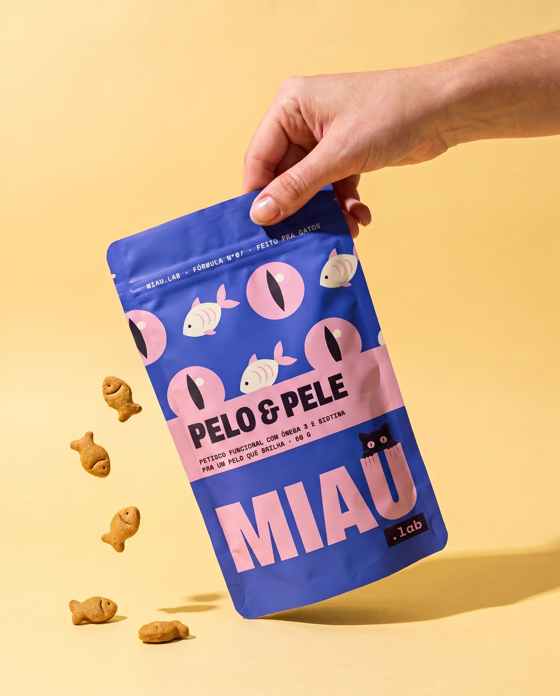
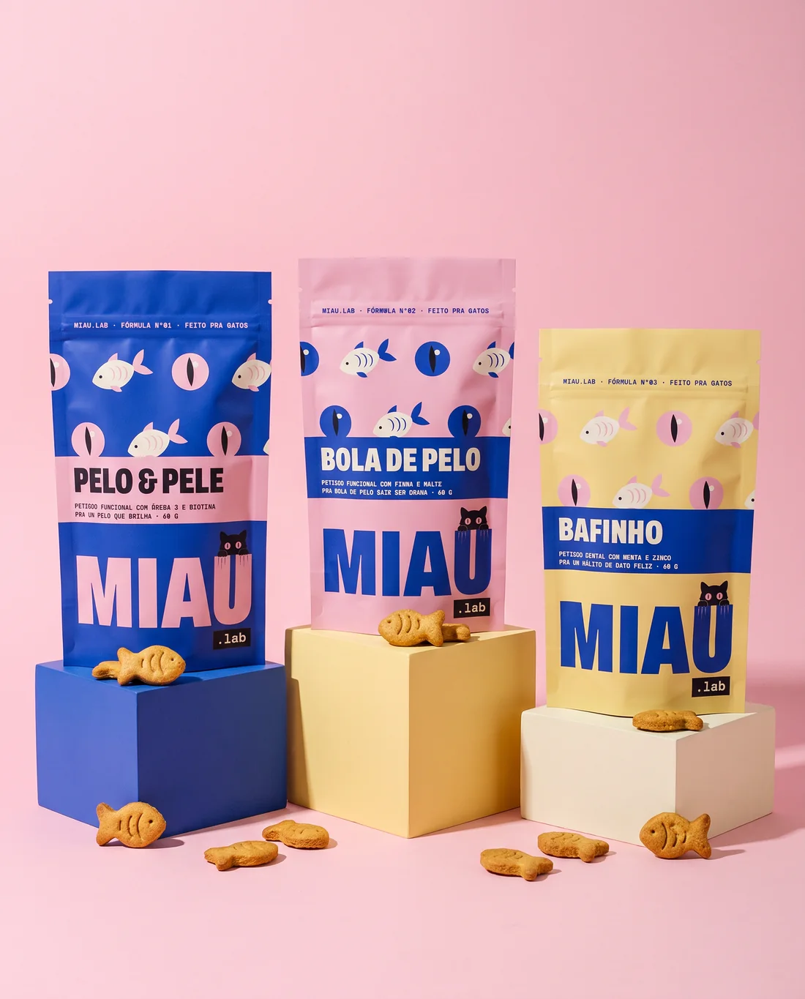

<title>MIAU.LAB</title>
<meta name="claude:viewport-fit-sides" content="cover">
<link rel="preconnect" href="https://fonts.googleapis.com"><link rel="preconnect" href="https://fonts.gstatic.com" crossorigin>
<link rel="stylesheet" href="https://fonts.googleapis.com/css2?family=Archivo:wdth,wght@62..125,100..900&family=Instrument+Sans:wght@400..700&family=Mea+Culpa&family=Space+Mono:wght@700&display=swap">
<style>
/* layout: como a referência POUR|PLAY, com a cara da MIAU.LAB — título grande à esquerda e a FOTO INTEIRA do produto à
   direita, sem recorte: o fundo da página é a cor do fundo de cada foto, então o produto parece estar no site.
   Na história, a coluna da foto fica parada enquanto os passos rolam; a foto troca suave e o fundo muda junto.
   Um mundo visual só (cores fixas da marca e das fotos). Animação por linha inteira, nunca letra por letra. */
:root {
  --cobalto: #2B3FD1; --rosa: #F4B9CD; --creme: #F6EEDC; --nanquim: #1C1A24;
  --f-pelo: #fcd794; --f-linha: #f6c4cc; --f-potes: #f4b2c2; --f-caixa: #f7c5c7;
  --display: 'Archivo', 'Arial Narrow', sans-serif; --texto: 'Instrument Sans', 'Helvetica Neue', Arial, sans-serif;
  --mono: 'Space Mono', ui-monospace, Menlo, monospace; --acento: 'Mea Culpa', 'Brush Script MT', cursive;
  --fundo: var(--f-pelo);
  color-scheme: light;
}
* { box-sizing: border-box; }
body { background: var(--fundo); color: var(--nanquim); font: 400 17px/1.55 var(--texto); -webkit-font-smoothing: antialiased; overflow-x: hidden; transition: background-color .6s ease; }
body::before { content: ""; position: fixed; inset: 0 0 auto; height: env(safe-area-inset-top, 0px); z-index: 60; background: var(--fundo); transition: background-color .6s ease; }
a { color: inherit; }
:focus-visible { outline: 3px solid var(--cobalto); outline-offset: 3px; border-radius: 6px; }
.lado { padding-left: max(16px, env(safe-area-inset-left, 0px)); padding-right: max(16px, env(safe-area-inset-right, 0px)); }
.rot { font: 700 12px/1.4 var(--mono); letter-spacing: .08em; text-transform: uppercase; }
.bt { display: inline-flex; align-items: center; gap: 10px; border-radius: 999px; padding: 14px 22px 13px; font: 600 15px/1 var(--texto); text-decoration: none; border: 0; cursor: pointer; background: var(--nanquim); color: var(--creme); transition: transform .25s; }
.bt:hover { transform: translateY(-2px); }
.bt.vazado { background: transparent; color: inherit; box-shadow: inset 0 0 0 2px currentColor; }
.tit { margin: 0; font: 900 clamp(60px, 8.6vw, 148px)/.86 var(--display); font-stretch: 62%; letter-spacing: -.005em; text-transform: uppercase; color: var(--cobalto); text-wrap: balance; }
.tit .l { display: block; overflow: hidden; padding-top: .06em; margin-top: -.06em; }
.tit .l > span { display: block; }
.logo { position: absolute; left: 0; top: 0; width: 899px; height: 700px; transform-origin: 0 0; }

/* topo */
.topo { position: fixed; left: 0; right: 0; top: env(safe-area-inset-top, 0px); z-index: 50; height: 68px; display: flex; align-items: center; justify-content: space-between; gap: 16px;
  background: var(--fundo); color: var(--nanquim); transition: background-color .6s ease, color .4s, transform .45s cubic-bezier(.2,.8,.2,1); }
.topo.some { transform: translateY(calc(-100% - env(safe-area-inset-top, 0px))); }
:root[data-escuro] .topo { color: var(--rosa); }
:root[data-escuro] .topo .bt { background: var(--rosa); color: var(--nanquim); }
.marca { font: 900 28px/1 var(--display); font-stretch: 62%; text-decoration: none; color: inherit; }
.marca small { font: 700 13px/1 var(--mono); }
.nav { display: flex; gap: 26px; align-items: center; font: 600 14px/1 var(--texto); }
.nav a { text-decoration: none; }
.nav .bt { padding: 11px 18px 10px; font-size: 13px; }
@media (max-width: 760px) { .nav a:not(.bt) { display: none; } }

/* hero */
.hero { position: relative; min-height: 100svh; display: grid; grid-template-columns: minmax(0, 1fr) minmax(0, 1fr); align-items: center; }
.hero .txt { position: relative; z-index: 2; display: grid; gap: 24px; padding-top: 90px; padding-bottom: 60px; }
.hero p { margin: 0; max-width: 34ch; font-size: 18px; }
.hero .acoes { display: flex; gap: 12px; flex-wrap: wrap; }
.hero .foto { position: absolute; right: 0; top: 0; bottom: 0; width: 52%; overflow: hidden;
  -webkit-mask-image: linear-gradient(to right, transparent 0, #000 16%); mask-image: linear-gradient(to right, transparent 0, #000 16%); }
.hero .fv { height: 100%; -webkit-mask-image: linear-gradient(to bottom, #000 80%, transparent); mask-image: linear-gradient(to bottom, #000 80%, transparent); }
.hero .foto img { width: 100%; height: 100%; object-fit: cover; object-position: 46% 30%; display: block; transform-origin: 50% 40%; }
@media (max-width: 760px) {
  .hero { grid-template-columns: 1fr; align-items: start; }
  .hero .txt { padding-top: 96px; padding-bottom: 0; }
  .hero .foto { position: relative; width: 100%; height: 62svh; -webkit-mask-image: linear-gradient(to bottom, transparent 0, #000 14%); mask-image: linear-gradient(to bottom, transparent 0, #000 14%); }
}

/* história com a foto parada */
.historia { position: relative; display: grid; grid-template-columns: minmax(0, 1fr) minmax(0, 1fr); }
.passos { position: relative; z-index: 2; }
.passo { min-height: 100svh; display: grid; align-content: center; gap: 20px; padding-block: 80px; }
.passo .num { font: 700 clamp(15px, 1.2vw, 18px)/1 var(--mono); letter-spacing: .06em; color: var(--creme); background: var(--nanquim); justify-self: start; padding: 8px 12px 7px; border-radius: 999px; }
.passo p { margin: 0; max-width: 34ch; font-size: 18px; }
.passo .ficha { display: flex; gap: 10px; flex-wrap: wrap; }
.passo .ficha span { border-radius: 999px; padding: 8px 14px 7px; background: #ffffff66; }
.mfoto { display: none; margin: 0; }
.mfoto img { width: 100%; height: 100%; object-fit: cover; display: block; }
.palco { position: sticky; top: 0; height: 100svh; overflow: hidden; }
.palco figure { position: absolute; inset: 0; margin: 0; opacity: 0; transform: scale(1.06); transition: opacity .8s ease, transform 1.2s cubic-bezier(.2,.8,.2,1);
  -webkit-mask-image: linear-gradient(to right, transparent 0, #000 16%); mask-image: linear-gradient(to right, transparent 0, #000 16%); }
.palco figure.on { opacity: 1; transform: scale(1); }
.palco img { width: 100%; height: 100%; object-fit: cover; display: block; }
@media (max-width: 760px) {
  .historia { grid-template-columns: 1fr; }
  .palco { display: none; }
  .mfoto { display: block; height: 58svh; margin: 0 calc(-1 * max(16px, env(safe-area-inset-left, 0px))) 8px;
    -webkit-mask-image: linear-gradient(to bottom, transparent 0, #000 12%, #000 84%, transparent); mask-image: linear-gradient(to bottom, transparent 0, #000 12%, #000 84%, transparent); }
  .passo { min-height: 0; padding-block: 8px 72px; gap: 16px; }
}

/* fórmulas */
.formulas { background: var(--creme); padding-block: clamp(80px, 10vw, 140px); }
.formulas .in { max-width: 1280px; margin: 0 auto; display: grid; gap: 48px; }
.grade { display: grid; grid-template-columns: repeat(3, minmax(0, 1fr)); gap: 28px; }
.prod { display: grid; gap: 16px; perspective: 900px; }
.pouch { position: relative; aspect-ratio: 560 / 1000; width: min(100%, 300px); margin: 0 auto; transform-style: preserve-3d; transition: transform .4s cubic-bezier(.2,.8,.2,1); }
.pouch img { width: 100%; height: 100%; display: block; border-radius: 22px 22px 16px 16px; box-shadow: 0 40px 50px -30px #1c1a2466; }
.pouch::after { content: ""; position: absolute; inset: 0; border-radius: 22px 22px 16px 16px; background: linear-gradient(105deg, #ffffff40 0%, transparent 30%, transparent 64%, #1c1a2422 100%); }
.prod h3 { margin: 0; font: 900 44px/.9 var(--display); font-stretch: 62%; text-transform: uppercase; color: var(--cobalto); text-align: center; }
.prod p { margin: 0; text-align: center; font-size: 15px; }
.prod .rot { text-align: center; }
@media (max-width: 760px) {
  .grade { grid-template-columns: none; grid-auto-flow: column; grid-auto-columns: 74%; gap: 16px; overflow-x: auto; scroll-snap-type: x mandatory; scrollbar-width: none;
    margin-inline: calc(-1 * max(16px, env(safe-area-inset-left, 0px))); padding: 8px max(16px, env(safe-area-inset-left, 0px)) 16px; }
  .grade::-webkit-scrollbar { display: none; }
  .prod { scroll-snap-align: center; }
}

/* manifesto */
.manifesto { background: var(--rosa); color: var(--cobalto); text-align: center; padding-block: clamp(80px, 11vw, 150px); overflow: hidden; }
.manifesto .a { font: 500 clamp(44px, 7vw, 110px)/1.05 var(--texto); letter-spacing: -.04em; }
.manifesto .b { font: 400 clamp(90px, 15vw, 230px)/.85 var(--acento); }
.manifesto .l { display: block; overflow: hidden; padding-block: .08em; }
.manifesto .l > span { display: inline-block; }
#gatoM { position: relative; width: min(84vw, 640px); margin: clamp(40px, 6vw, 72px) auto 0; aspect-ratio: 899 / 560; }
#ronron { font: 400 clamp(36px, 4vw, 56px)/1.2 var(--acento); min-height: 1.3em; opacity: 0; transition: opacity .4s; }

/* panorâmica */
.pano { position: relative; height: clamp(320px, 56vw, 760px); overflow: hidden; margin: 0; }
.pano img { position: absolute; left: 0; top: -12%; width: 100%; height: 124%; object-fit: cover; object-position: 40% 50%; }

/* rodapé */
.rodape { background: var(--cobalto); color: var(--rosa); padding-block: clamp(60px, 8vw, 110px) 28px; }
.rodape .in { max-width: 1280px; margin: 0 auto; display: grid; gap: 40px; }
#logoR { position: relative; width: min(100%, 560px); margin: 0 auto; aspect-ratio: 899 / 640; }
.base { display: flex; justify-content: space-between; gap: 16px; flex-wrap: wrap; border-top: 2px solid var(--rosa); padding-top: 18px; }
@media (prefers-reduced-motion: reduce) { *, *::before, *::after { transition: none !important; } }
</style>

<header class="topo lado">
  <a class="marca" href="#inicio" aria-label="MIAU.LAB, início">MIAU<small>.lab</small></a>
  <nav class="nav" aria-label="Seções"><a href="#historia">Fórmulas</a><a href="#manifesto">Ciência</a><a class="bt" href="#formulas">Ver a linha</a></nav>
</header>

<main id="inicio">
  <section class="hero lado" data-fundo="--f-pelo">
    <div class="txt">
      <span class="rot">Nº01 · Pelo &amp; Pele · petisco funcional</span>
      <h1 class="tit"><span class="l"><span>Petisco</span></span><span class="l"><span>com</span></span><span class="l"><span>ciência.</span></span></h1>
      <p>Fórmula veterinária, feita pra gatos. Ômega 3 e biotina num petisco que o gato pede, pra um pelo que brilha no sol da janela.</p>
      <div class="acoes"><a class="bt" href="#historia">Conhecer as fórmulas</a><a class="bt vazado" href="#manifesto">Sobre a marca</a></div>
    </div>
    <div class="foto"><div class="fv"></div></div>
  </section>

  <section class="historia" id="historia" aria-label="As fórmulas">
    <div class="passos lado">
      <article class="passo" data-i="0" data-fundo="--f-linha"><figure class="mfoto" aria-hidden="true"></figure><div class="num">Nº02</div><span class="rot">Fórmula · Bola de pelo</span>
        <h2 class="tit"><span class="l"><span>Bola de pelo?</span></span><span class="l"><span>Sai.</span></span></h2>
        <p>Fibra e malte pra bola de pelo sair sem drama, e sem tapete estragado.</p><div class="ficha rot"><span>petisco funcional</span><span>60 g</span></div></article>
      <article class="passo" data-i="1" data-fundo="--f-potes"><figure class="mfoto" aria-hidden="true"></figure><div class="num">Nº03</div><span class="rot">Fórmula · Bafinho</span>
        <h2 class="tit"><span class="l"><span>Bafinho,</span></span><span class="l"><span>tchau.</span></span></h2>
        <p>Menta, zinco e probiótico pro hálito de gato feliz. Ele cheira e aprova.</p><div class="ficha rot"><span>suplemento</span><span>30 comprimidos</span></div></article>
      <article class="passo" data-i="2" data-fundo="--f-caixa"><figure class="mfoto" aria-hidden="true"></figure><div class="num">Nº05</div><span class="rot">Fórmula · Mobilidade</span>
        <h2 class="tit"><span class="l"><span>Sobe no sofá</span></span><span class="l"><span>sem drama.</span></span></h2>
        <p>Condroitina e glucosamina pras articulações de quem ainda manda na casa.</p><div class="ficha rot"><span>suplemento</span><span>30 comprimidos</span></div></article>
    </div>
    <div class="palco" aria-hidden="true">
      <figure class="on"></figure>
      <figure></figure>
      <figure></figure>
    </div>
  </section>

  <section class="formulas lado" id="formulas" aria-labelledby="t-f" data-fundo="--creme">
    <div class="in">
      <h2 class="tit" id="t-f"><span class="l"><span>A linha.</span></span></h2>
      <div class="grade">
        <article class="prod"><div class="pouch"></div><span class="rot">Nº01 · petisco funcional</span><h3>Pelo &amp; pele</h3><p>Ômega 3 + biotina. 60 g.</p></article>
        <article class="prod"><div class="pouch"></div><span class="rot">Nº02 · petisco funcional</span><h3>Bola de pelo</h3><p>Fibra + malte. 60 g.</p></article>
        <article class="prod"><div class="pouch"></div><span class="rot">Nº03 · petisco dental</span><h3>Bafinho</h3><p>Menta + zinco. 60 g.</p></article>
      </div>
    </div>
  </section>

  <section class="manifesto lado" id="manifesto" aria-labelledby="t-m" data-fundo="--rosa">
    <h2 id="t-m" style="margin:0;font-weight:inherit"><span class="l a"><span>Ciência que</span></span><span class="l b"><span>ronrona.</span></span></h2>
    <div id="gatoM" role="img" aria-label="Logo MIAU.lab: o gato espiando por cima do U acompanha o cursor com os olhos"></div>
    <div style="margin-top:28px"><button class="bt" id="carinho" type="button">Fazer carinho no gato</button></div>
    <div id="ronron" aria-live="polite">rrrrrrrr</div>
  </section>

  <figure class="pano" data-fundo="--f-pelo"></figure>
</main>

<footer class="rodape lado" data-fundo="--cobalto">
  <div class="in">
    <div id="logoR" role="img" aria-label="Logo MIAU.lab"></div>
    <div class="base rot"><span>MIAU.LAB · marca conceitual</span><span>Identidade visual: EMS · @itsemsdesign</span><span>Feita pra gatos.</span></div>
  </div>
</footer>
<audio id="aRon" src="img/ronrom.mp3" preload="auto"></audio>

<script src="https://cdnjs.cloudflare.com/ajax/libs/gsap/3.12.5/gsap.min.js"></script>
<script src="https://cdnjs.cloudflare.com/ajax/libs/gsap/3.12.5/ScrollTrigger.min.js"></script>
<script src="js/gato.js"></script>
<script src="js/logo.js"></script>
<script>
(() => {
  const C = { cobalto: '#2B3FD1', rosa: '#F4B9CD', creme: '#F6EEDC', nanquim: '#1C1A24' };
  const $ = id => document.getElementById(id), reduz = matchMedia('(prefers-reduced-motion: reduce)').matches;
  const raiz = document.documentElement, varCor = v => getComputedStyle(raiz).getPropertyValue(v).trim();
  // ---------- fundo acompanha a seção (a cor do fundo de cada foto) ----------
  const fundo = v => { raiz.style.setProperty('--fundo', varCor(v)); if (v === '--cobalto') raiz.dataset.escuro = ''; else delete raiz.dataset.escuro; };
  // topo some ao descer e volta ao subir, pra nunca ficar por cima do texto
  let yAnt = scrollY; const topo = document.querySelector('.topo');
  addEventListener('scroll', () => { const y = scrollY; if (Math.abs(y - yAnt) > 6) { topo.classList.toggle('some', y > yAnt && y > 120); yAnt = y; } }, { passive: true });
  const figs = [...document.querySelectorAll('.palco figure')];
  const io = new IntersectionObserver(es => es.forEach(e => { if (!e.isIntersecting) return; const el = e.target;
    if (el.dataset.fundo) fundo(el.dataset.fundo);
    if (el.dataset.i !== undefined) figs.forEach((f, k) => f.classList.toggle('on', k === +el.dataset.i)); }), { rootMargin: '-45% 0px -45% 0px' });
  document.querySelectorAll('[data-fundo]').forEach(el => io.observe(el));
  // ---------- logos com o gato: olhos seguem o cursor e piscam ----------
  let mx = innerWidth * .5, my = innerHeight * .3, feliz = 0, pisca = 0, prox = performance.now() + 2200;
  addEventListener('pointermove', e => { mx = e.clientX; my = e.clientY; }, { passive: true });
  const logos = [];
  function poeLogo(caixa, o) {
    const d = document.createElement('div'); d.className = 'logo'; caixa.appendChild(d);
    miauLogoV3(d, Object.assign({ gato: C.nanquim, olho: C.rosa }, o));
    [...d.children].forEach(n => { if (n.textContent === '.lab') n.style.fontFamily = "'Space Mono', monospace"; });
    const ajusta = () => { const k = caixa.clientWidth / 899; d.style.transform = `translate(0, ${-130 * k}px) scale(${k})`; }; ajusta(); addEventListener('resize', ajusta);
    d.olhos = [...d.children[0].children[1].children].map(g => ({ g, t0: g.getAttribute('transform'), pup: [...g.children].slice(1) })); d.caixa = caixa; logos.push(d);
  }
  function olhos(t) {
    if (!reduz && t > prox) { const u = (t - prox) / 170; pisca = u < 1 ? Math.sin(Math.PI * u) : 0; if (u >= 1) prox = t + 2600 + Math.random() * 2600; }
    logos.forEach(L => { const r = L.caixa.getBoundingClientRect(); if (r.bottom < 0 || r.top > innerHeight) return;
      const k = r.width / 899, cx = r.left + 798 * k, cy = r.top + 85 * k, dx = mx - cx, dy = my - cy, n = Math.max(Math.hypot(dx, dy), 200), f = Math.max(pisca, feliz * .82);
      L.olhos.forEach(({ g, t0, pup }) => { g.setAttribute('transform', `${t0} scale(1 ${Math.max(.06, 1 - f)})`); pup.forEach(e => e.setAttribute('transform', `translate(${dx / n * 12} ${dy / n * 7})`)); }); });
    requestAnimationFrame(olhos);
  }
  $('carinho').addEventListener('click', () => { const a = $('aRon'); try { a.currentTime = 0; a.play().catch(() => {}); } catch (e) {}
    $('ronron').style.opacity = 1; const o = { v: feliz }; gsap.to(o, { v: 1, duration: .5, onUpdate: () => feliz = o.v });
    clearTimeout(window._rr); window._rr = setTimeout(() => { $('ronron').style.opacity = 0; const p = { v: 1 }; gsap.to(p, { v: 0, duration: .6, onUpdate: () => feliz = p.v }); }, 5200); });
  // ---------- pouches inclinam com o mouse ----------
  document.querySelectorAll('.pouch').forEach(pc => { pc.addEventListener('pointermove', e => { const r = pc.getBoundingClientRect(), x = (e.clientX - r.left) / r.width - .5, y = (e.clientY - r.top) / r.height - .5;
    pc.style.transform = `rotateY(${x * 20}deg) rotateX(${-y * 14}deg)`; }); pc.addEventListener('pointerleave', () => pc.style.transform = ''); });
  document.fonts.ready.then(() => {
    poeLogo($('gatoM'), { cor: C.cobalto, fundo: C.rosa, labFundo: C.nanquim, labCor: C.creme });
    poeLogo($('logoR'), { cor: C.rosa, fundo: C.cobalto, labFundo: C.creme, labCor: C.nanquim });
    requestAnimationFrame(olhos);
    if (reduz || !window.gsap) return;
    gsap.registerPlugin(ScrollTrigger); ScrollTrigger.config({ ignoreMobileResize: true });
    // entrada do topo: linhas do título sobem, a foto assenta
    gsap.from('.hero .tit .l > span', { yPercent: 105, duration: 1, ease: 'power4.out', stagger: .09, delay: .1 });
    gsap.from('.hero .rot, .hero p, .hero .acoes', { y: 20, opacity: 0, duration: .8, ease: 'power3.out', stagger: .08, delay: .45 });
    gsap.from('.hero .foto img', { scale: 1.12, opacity: 0, duration: 1.4, ease: 'power3.out' });
    gsap.to('.hero .foto img', { yPercent: 8, ease: 'none', scrollTrigger: { trigger: '.hero', start: 'top top', end: 'bottom top', scrub: true } });
    // cada título entra por linha quando chega na tela
    document.querySelectorAll('.passo, .formulas, .manifesto').forEach(sec => {
      gsap.from(sec.querySelectorAll('.l > span'), { yPercent: 105, duration: .9, ease: 'power4.out', stagger: .08, scrollTrigger: { trigger: sec, start: 'top 72%' } });
      gsap.from(sec.querySelectorAll('.rot, p, .ficha, .num'), { y: 18, opacity: 0, duration: .7, ease: 'power3.out', stagger: .05, scrollTrigger: { trigger: sec, start: 'top 68%' } }); });
    gsap.from('.prod', { y: 60, opacity: 0, duration: .9, ease: 'power3.out', stagger: .12, scrollTrigger: { trigger: '.grade', start: 'top 80%' } });
    gsap.from('#gatoM', { y: 80, opacity: 0, duration: 1, ease: 'power3.out', scrollTrigger: { trigger: '#gatoM', start: 'top 88%' } });
    gsap.to('.pano img', { yPercent: 10, ease: 'none', scrollTrigger: { trigger: '.pano', start: 'top bottom', end: 'bottom top', scrub: true } });
    Promise.all([...document.images].map(i => i.complete ? 0 : new Promise(r => { i.onload = i.onerror = r; }))).then(() => ScrollTrigger.refresh());
  });
})();
</script>
